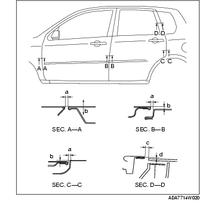

Door adjustment
1. Measure the gap and height difference between the front or rear door and the body, and verify that they are within the specification.
2. Loosen the front or rear door hinge installation bolts, or the door lock striker installation screws, and reposition the door or the door lock striker.

Clearance
- a: 3.0-5.0 mm {0.12-0.19 in}
- b: -1.0-1.0 mm {-0.03-0.03 in}
- c: 2.5-5.5 mm {0.10-0.21 in}
- d: 0.5-3.5 mm {0.02-0.13 in}
3. Tighten the bolts or screws.